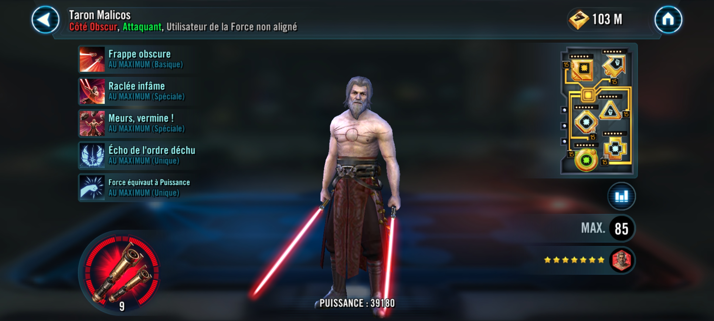
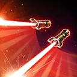
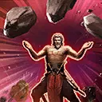

Taron Malicos
A formidable Attacker and former Jedi with dark ambitions who fights on the edge of madness
A formidable Attacker and former Jedi with dark ambitions who fights on the edge of madness


Deal Physical damage to target enemy and gain 2 stacks of Edge of Madness (max 100) until the end of the encounter, which can't be copied, dispelled, or prevented.
This attack can't be countered.
Edge of Madness: -2% Defense per stack
Deal Physical damage to target enemy and gain Riposte for 2 turns. This attack has +30% Defense Penetration, quadrupled if all allies are Dark Side or Light Side Unaligned Force Users.
If Malicos has at least 20 stacks of Edge of Madness, he takes a bonus turn. For every 20 stacks of Edge of Madness he has, dispel them and gain a stack of Madness Manifested until the next time he uses Die, Whelp!, is defeated, or the end of the encounter, which can't be copied, dispelled, or prevented, and if the ally in the Leader slot is a Dark Side or Light Side Unaligned Force User, the cooldown of Die, Whelp! is reset.
Madness Manifested: -40% Tenacity per stack; the next time this character uses Die, Whelp!, it deals 50% more Physical damage per stack, reduces the current Max Health of the target enemy by 15% for the rest of the battle (stacking, excluding raid bosses and Galactic Legends), which can't be resisted, and removes all stacks of Madness Manifested

Deal Physical damage and inflict Vulnerable to all enemies and Stun target enemy for 1 turn. If the target had Defense Down, this Stun can't be resisted.
If the target enemy is in the Leader slot, increase their cooldowns by 1, which can't be resisted.
Omicron Boost : While in Grand Arenas: Deal additional true damage to all enemies and inflict Buff Immunity and Healing Immunity on target enemy for 2 turns, which can't be resisted.
If the ally in the Leader slot is a Dark Side or Light Side Unaligned Force User, Malicos gains 20% Critical Damage and Offense (stacking) until the end of the battle.
All allies have +30% Critical Chance.
If all allies were Unaligned Force Users at the start of battle: While Malicos has at least one stack of Edge of Madness, whenever he scores a critical hit, all other allies gain 5% Critical Damage and Offense (stacking) until the end of the encounter. Whenever an ally is inflicted with Healing Immunity, they dispel it and gain Damage Immunity for 1 turn, whenever they are inflicted with Stun, they dispel it and recover 30% Health and Protection.
Omicron Boost : While in Grand Arenas: Enemies defeated by allies can't be revived. This effect persists if Malicos is defeated.
The first time another Dark Side or Light Side Unaligned Force User ally would be reduced to 1% Health, if Malicos is active, they recover 100% Health and Protection, gain Damage Immunity for 1 turn, take a bonus turn, and gain Critical Chance Up, Critical Damage Up, and Offense Up for 2 turns.
While Malicos is active, whenever an enemy with less than 100% Turn Meter gains bonus Turn Meter, Malicos gains a stack of Edge of Madness and that enemy takes true damage, which can't be evaded (limit once per turn). This damage can't defeat enemies.
Malicos' attacks can't be evaded, enemies defeated by him can't be revived, he has 75% counter chance and 100% Health Steal, and at the start of battle, he gains 25% Offense for each other Dark Side or Light Side Unaligned Force User. If the ally in the Leader slot is a Dark Side or Light Side Unaligned Force User, Malicos ignores Taunt effects.
While debuffed, he gains 50% Health Steal.
Whenever Malicos uses an ability during his turn, if he has Accuracy Up or Defense Up, he immediately uses Dark Strike. Whenever he attacks out of turn, he gains 10% Critical Damage (stacking) for 3 turns. Whenever he is inflicted with Daze, he dispels it and reduces his cooldowns by 1.
Whenever an enemy dispels a debuff Malicos inflicted from one of his abilities, he gains a stack of Edge of Madness until the end of the encounter.
Omicron Boost : While in Grand Arenas: At the start of battle, Malicos gains a stack of Edge of Madness until the end of the encounter, and all Unaligned Force User allies gain Critical Hit Immunity for 2 turns which can't be dispelled. He has +100% Max Health and +50% Mastery.
Whenever he uses an ability during his turn, he immediately uses Dark Strike. Whenever he attacks out of turn, he gains Protection Up (20%, stacking) for 1 turn.
Whenever any other Unaligned Force User ally uses a Special ability, Malicos assists.